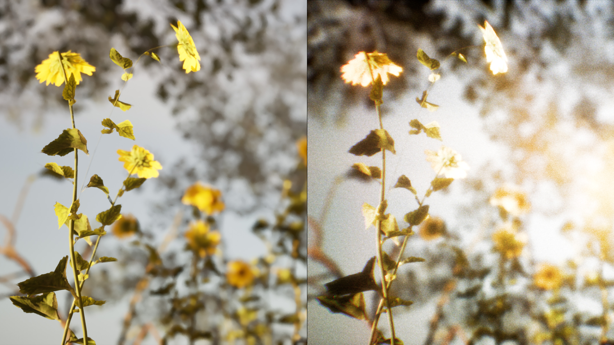
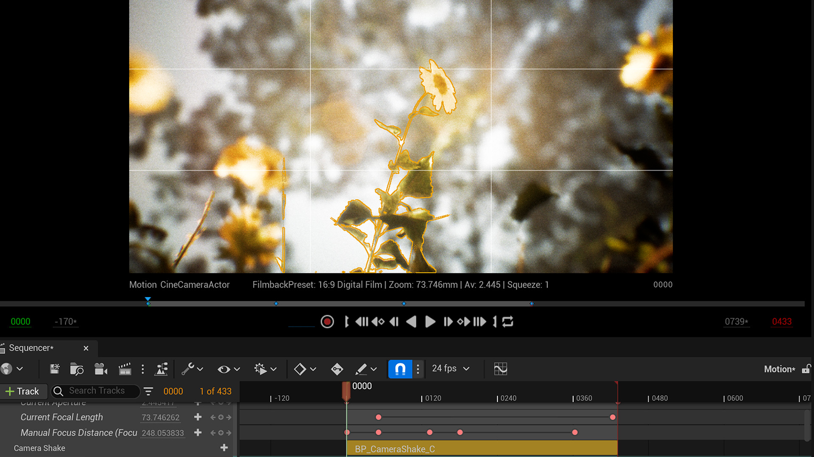
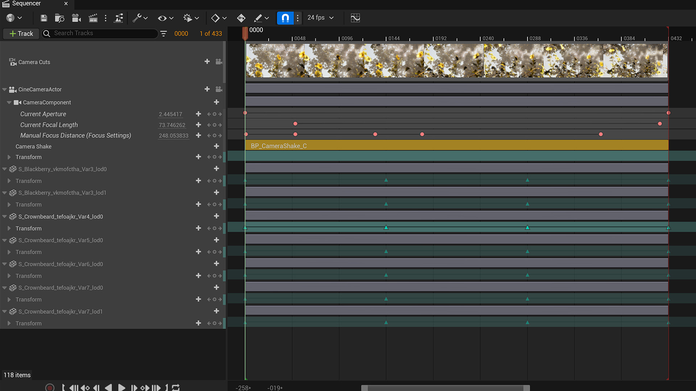

01
Light Archive
- 01.1 Installation
- 01.2 Exhibition
- 01.3 Interactive
2025
Premiere, TouchDesigner
Enquiries
E. 3dowon@gmail.comInteractive installations and media experiments with light, space, and everyday objects.
23 works · 90 images
2025
Premiere, TouchDesigner

2024
ESP32, Max/MSP

2024
Arduino, Max/MSP

2024
Processing, Python

2024
TouchDesigner, Unity

2022
Unity, video scheduling




2024
Arduino, real-time graphics

2024
Unreal Engine, TouchDesigner

2024
Arduino, DMX

2024
Arduino, serial communication

2024
Arduino, TouchDesigner

2024
Arduino, Unity

2024
Max/MSP, TouchDesigner

2024
Arduino, Unreal Engine, sensors


2023
Unity, projection

2022
TouchDesigner, MadMapper

2022
Unreal Engine, ZigSim

2021
TouchDesigner, DMX

2021
TouchDesigner, Kinect


2020
ESP32, TouchOSC

2018
Processing, OpenFrameworks

2018
Kinect, TouchDesigner

2018
Unreal Engine, Leap Motion

No work matches these filters.